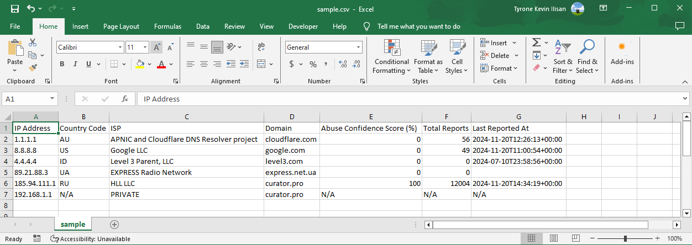

Pixie Lite PowerShell (PS) is a lightweight PS script designed to aid security analyst to look up bulk IP addresses against Abuse IP DB database using its APIv2. The script is only 92 lines long and 2.15 KB in size. This iteration of Pixie was developed to eliminate the need to install anything in Windows environments.
Get the PS script at: https://github.com/UncleSocks/pixie-defenders-automated-ip-address-workflow/blob/main/Pixie%20Powershell/pixie.ps1
Before the PowerShell Script
When I was working as an L1 SOC Analyst at an Australian Managed Service Provider (MSP), one of the challenges I encountered was manually researching large volumes of IP addresses to gather their geographic location and ISP details. This was necessary to identify IP addresses to which internal hosts were connecting to that were not part of the validated list.
For this reason, I decided to practice my Python script to automate the task. Originally, I leveraged IPInfo’s API capability to automatically pull the IP geolocation, company, and hostname informaition of bulk IP addresses, which simply displays the parsed data to the CLI using the IP_ADDRESS[COUNTRY:COMPANY:HOSTNAME] format. I named this tool Pixie, after our Mini Pinscher, since this was my first tool and its feature is fairly straightforward (mini). Overtime, the need to also include IP address reputation in a readable format arose. The Pixie Lite for Abuse IP DB was then born, which accepts a .txt file, communicates using Abuse IP DB API to capture the county code, ISP, abuse confidence score, total reports, and last reported date of each IP address, then exports the parsed data into a .csv file. The tool was eventually used by my organization to automate monthly IP address reputation reports – this made me very proud.
Developing the PowerShell Script
Pixie has multiple Python 3 variants, including a feature to filter based on the company and an additional IP Cisco Talos blocklist check. I will have to refactor and update the Python codes first before writing a blog post about it. For now, this post will focus on the PS version, which is essentially a rewritten Pixie Lite for Abuse IP DB Python script. Similar with the Python version, it accepts a .txt file, which should contain one IP address per line, then exports the parsed data to a .csv file.
Global Parameters and Initial Setup
The script will require three arguments: ApiKey, FilePath, and OutputPath. The ApiKey is the Abuse IP DB APIv2 Key. The FilePath is the file location of the input .txt file, and the OutputPath is the CSV file location.
param([string]$ApiKey,
[string]$FilePath,
[string]$OutputPath
)
As part of our initial setup, we will create a blank array, where we will append each processed (parsed) IP address. Then, we will gather the contents of the .txt input file.
$processedIpArray = @()
$fileContent = Get-Content -Path $FilePath
Connecting with Abuse IP DB APIv2
The PS script uses Abuse IP DB’s APIv2 but we need to specify the HTTP parameters: URI, Method, Headers, and Body (Query) [1]. The script sends a GET request to https://api.abuseipdb.com/api/v2/check with the API key as the authentication, while specifying the accepted format to be JSON [2]. The script will then query each IP address from the .txt file using a For-Loop.
$headers = @{
'Key' = $ApiKey
'Accept' = 'application/json'
}
$body = @{
'ipAddress' = $line
'maxAgeInDays' = '90'
}
$Params = @{
Uri = 'https://api.abuseipdb.com/api/v2/check'
Method = 'GET'
Headers = $headers
Body = $body
}
We can now pass these parameters using the Invoke-RestMethod cmdlet, which we will look at in the next subsection.
PowerShell Script Logic
The script loops through the specified .txt file and uses the Invoke-RestMethod cmdlet to GET the details of each IP address from the Abuse IP DB database.
$lookup = Invoke-RestMethod @Params
The Abuse IP DB JSON Response
When performing a Check Endpoint API GET request to Abuse IP DB, it will send a JSON response containing information of the queried IP address. By default, the response is a one-line, making it difficult to read and parse. The commented out lines can be used to convert the JSON response to a more human-readable format if you want to include additional details.
#$lookupParsed = $lookup | ConvertTo-Json #Convert JSON to a more human-readable format.
#Write-Output $lookupParsed #Print human-readable JSON response for testing.
The $lookupParsed uses the ConvertTo-Json cmdlet to make the JSON response more human-readable, as shown below. Please note that this is not part of the script logic but was kept for testing, especially if users want to include more information.
{
"data": {
"ipAddress": "1.1.1.1",
"isPublic": true,
"ipVersion": 4,
"isWhitelisted": true,
"abuseConfidenceScore": 0,
"countryCode": "AU",
"usageType": "Content Delivery Network",
"isp": "APNIC and Cloudflare DNS Resolver project",
"domain": "cloudflare.com",
"hostnames": [
"one.one.one.one"
],
"isTor": false,
"totalReports": 57,
"numDistinctUsers": 13,
"lastReportedAt": "2024-11-20T16:01:14+00:00"
}
}
Abuse IP DB Lookup Logic
The script will first check whether the IP address is public. If so, it extracts and parses the country code, ISP, domain, abuse confidence score, total reports, and last reported date from the JSON response. However, if the IP address is not public, the script set the country code as PRIVATE and the rest of the columns as N/A explicitly.
if ($isPublic -eq $true) {
try {
$countryCode = $lookup.data.countryCode
} catch {
$countryCode = 'N/A'
}
try {
$isp = $lookup.data.isp
} catch {
$isp = 'N/A'
}
try {
$domain = $lookup.data.domain
} catch {
$domain = 'N/A'
}
$abuseConfidenceScore = $lookup.data.abuseConfidenceScore
$totalReports = $lookup.data.totalReports
$lastReportedAt = $lookup.data.lastReportedAt
} else {
$countryCode = 'N/A'
$isp = 'PRIVATE'
$abuseConfidenceScore = 'N/A'
$totalReports = 'N/A'
$lastReportedAt = 'N/A'
}
When parsing the JSON response, we can access each child value by specifying the key term, separated by a period (.).
Exporting to a CSV File
Before the script can generate a CSV file, it will first create an array of PSCustomObject to represent a collection of key/value pairs, which is useful when using the Export-Csv cmdlet [3]. This effectively creates the columns and the headers of the CSV file, while specifying which function to append on each column.
$processedIp = [PSCustomObject]@{
'IP Address' = $ipAddress
'Country Code' = $countryCode
'ISP' = $isp
'Domain' = $domain
'Abuse Confidence Score (%)' = $abuseConfidenceScore
'Total Reports' = $totalReports
'Last Reported At' = $lastReportedAt
}
$processedIpArray += $processedIp
Next, the script will append each processed IP address to the $processedIpArray array that we previously created. Then it uses the Export-Csv cmdlet to generate a CSV file to the specified $OutputPath based on the $processedIpArray array. The -NoTypeInformation will remove any unncessary metadata from the CSV contents.
$processedIpArray | Export-Csv $OutputPath -Encoding UTF8 -NoTypeInformation
PowerShell Script Usage
To use the Pixie PS script, simply execute the pixie.ps1 script and specify the API key, input text file location, and output CSV file location, for example:
pixie.ps1 -ApiKey "123456789" -FileLocation "C:\Users\Pixie\Documents\ip.txt" -OutputPath "C:\Users\Pixie\Documents\output.csv"
After the script is finished running, it should generate a CSV file on the specified -OutputPath location, which would look like in Fig. 1 below.
 Fig. 1. Sample Pixie PowerShell CSV Output
I hope you learn something useful from this blog post, and of course, I also hope that this tool helps make SOC analysts’ work a little bit easier.
Reference
- Microsoft, Invoke-RestMethod, -Body, microsoft.com, https://learn.microsoft.com/en-us/powershell/module/microsoft.powershell.utility/invoke-restmethod?view=powershell-7.4 (accessed November 20, 2024)
- AbuseIPDB, CHECK Endpoint, abuseipdb.com, https://docs.abuseipdb.com/#introduction (accessed November 20, 2024)
- Microsoft, Everything you wanted to know about PSCustomObject, microsoft.com, https://learn.microsoft.com/en-us/powershell/scripting/learn/deep-dives/everything-about-pscustomobject?view=powershell-7.4 (accessed November 20, 2024)